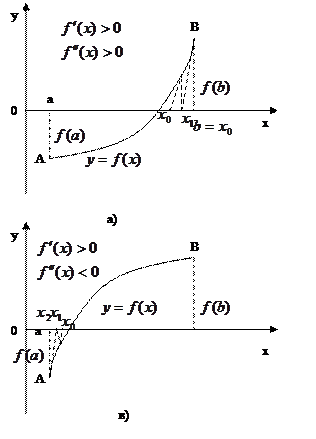
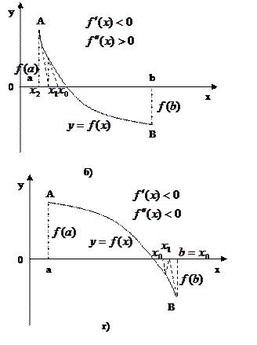

Метод Ньютона (метод дотичних).
Нехай  - корінь рівняння (1), локалізован на відрізку
- корінь рівняння (1), локалізован на відрізку  , причому
, причому  і неперервні і зберігають знаки
і неперервні і зберігають знаки  . Нехай - те наближення кореня. Розкладемо функцію
. Нехай - те наближення кореня. Розкладемо функцію  в ряд Тейлора в околі точки .
в ряд Тейлора в околі точки .
Замість рівняння (1) розглянемо рівняння , яке враховує лише лінійну частину ряду Тейлора відносно . Розв’язавши його відносно х, отримаємо
Взявши знайдене значення для наступного наближення, матимемо
(n = 0,1,2,…) (5)
Формула (5) визначає метод Ньютона.
Геометрично метод Ньютона еквівалентний заміні невеликої дуги кривої дотичною, проведеною через деяку точку кривої. Значення  є абсцисою точки перетину дотичної до кривої в точці (див. мал.2). Тому метод Ньютона називають ще методом дотичних. З малюнку видно, що послідовні наближення збігаються до кореня х монотонно. За початкове наближення у методі Ньютона слід брати точку
є абсцисою точки перетину дотичної до кривої в точці (див. мал.2). Тому метод Ньютона називають ще методом дотичних. З малюнку видно, що послідовні наближення збігаються до кореня х монотонно. За початкове наближення у методі Ньютона слід брати точку  із заданого проміжку, для якої виконується нерівність .
із заданого проміжку, для якої виконується нерівність .

Достатні умови збіжності методу Ньютона дає така теорема.
Теорема: Нехай на відрізку  функція має неперервні із сталими знаками похідні і . Тоді існує такий окіл
функція має неперервні із сталими знаками похідні і . Тоді існує такий окіл  кореня
кореня  рівняння (1), що для будь-якого послідовність , обчислена за формулою (5), збігається до кореня
рівняння (1), що для будь-якого послідовність , обчислена за формулою (5), збігається до кореня  .
.